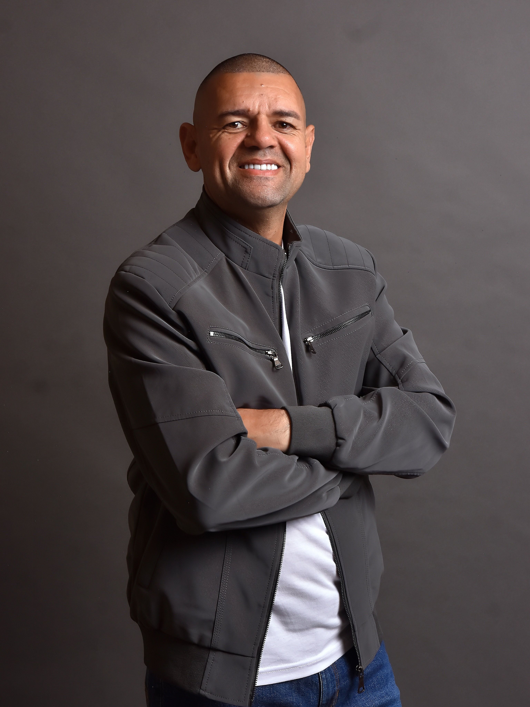

Seu carro.
Suas conquistas.
Cuide do patrimônio que acompanha você e sua família todos os dias.
Quero proteger meu carroCONFIANÇA QUE PROTEGE
Você se dedica para conquistar.
A 21Go! ajuda a cuidar do que move a sua vida.
Proteção patrimonial para carros, motos
e motos elétricas.
Grande Rio Baixada Interior do estado
Perto de você. Em cada caminho.
Presidente da 21Go!
CONHEÇA A 21GO!
A 21Go! apresenta uma proposta de proteção patrimonial com atenção a quem vive e se movimenta pelo Rio de Janeiro: Grande Rio, Baixada e interior do estado.
À frente da empresa está Marcos Alves, que compartilha em seu perfil uma visão de fé, família e propósito.
“Deus é o centro.Conheça o presidente @marcosalves_pr
Família é a base.
O resultado é consequência.”Marcos Alves · apresentação no Instagram
PARA A SUA ROTINA
Para trabalhar, passear ou estar com quem importa. Encontre a proteção patrimonial adequada ao seu veículo.
Cuide do patrimônio que acompanha você e sua família todos os dias.
Quero proteger meu carroPara quem tem a vida em movimento e faz das duas rodas parte da sua história.
Quero proteger minha motoSua mobilidade evoluiu. Conheça as opções de proteção patrimonial para sua moto elétrica.
Proteger minha moto elétricaConsulte a elegibilidade do modelo e as condições disponíveis para o seu veículo.
CUIDADO QUE FAZ A DIFERENÇA
Conheça os benefícios apresentados pela 21Go! e converse com um consultor para montar sua proposta.
Proteção para o seu patrimônio em situações de roubo do veículo.
Amparo para ocorrências de furto, conforme as condições da proteção contratada.
Cuidado com o seu veículo em casos de colisões e acidentes.
Proteção para eventos como chuvas, enchentes e granizo, conforme o plano.
Benefício para danos a terceiros, respeitando os limites e critérios contratados.
COMECE COM UMA CONVERSA
Chame no WhatsApp e informe o modelo, o ano e a sua cidade.
Entenda os benefícios, os valores e as condições para a sua rotina.
Confira o regulamento e siga as orientações do consultor para a contratação e o início da proteção.
INFORMAÇÃO PARA DECIDIR
Uma boa escolha começa com uma conversa clara.
Tirar minhas dúvidas pelo WhatsAppÉ uma proposta de proteção para o patrimônio representado pelo seu veículo, com benefícios para situações previstas no plano. Antes da adesão, o consultor apresenta o funcionamento, as condições e o regulamento aplicável.
Você pode solicitar uma proposta de proteção patrimonial para essas três categorias. Informe o modelo, o ano e a sua cidade para confirmar a elegibilidade e os benefícios disponíveis para o veículo.
O material da 21Go! apresenta proteção para roubo, furto, colisão, fenômenos da natureza e danos a terceiros. A disponibilidade, os limites e as condições de cada benefício devem ser confirmados na proposta e no regulamento.
Solicite uma proposta personalizada pelo WhatsApp. O consultor vai avaliar as informações do veículo e apresentar os valores e as condições disponíveis, para que você decida com clareza.
O material de apresentação destaca o estado do Rio de Janeiro, incluindo Grande Rio, Baixada e interior. Consulte o atendimento na sua cidade e a abrangência de cada benefício.
O início da proteção depende da conclusão das etapas exigidas para a adesão e da confirmação da 21Go!. Confira a data de início e as condições na sua proposta antes de utilizar os benefícios.
O QUE VOCÊ CONQUISTOU IMPORTA.
Carro, moto ou moto elétrica.
Sua proteção patrimonial começa com uma conversa.